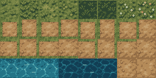
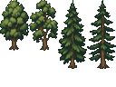

Water Margin · ground and trees
Native 16 px tiles, displayed at 4×. Trees use the game’s bottom-aligned drawing pass. Water runs at three frames per second.
Loading sprite sheets…

Ground atlas — 256 × 128 px
Tree atlas — 128 × 96 pxPlay the game · Asset coordinates